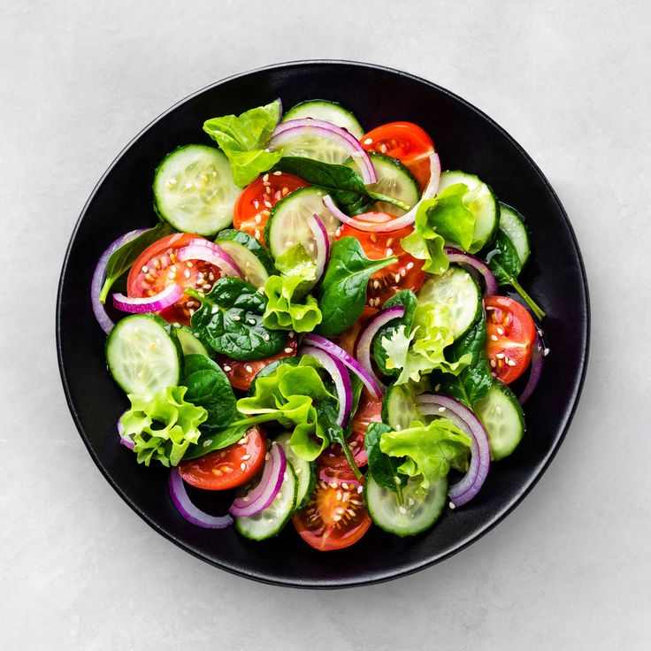
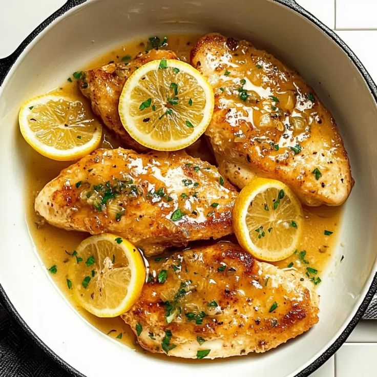
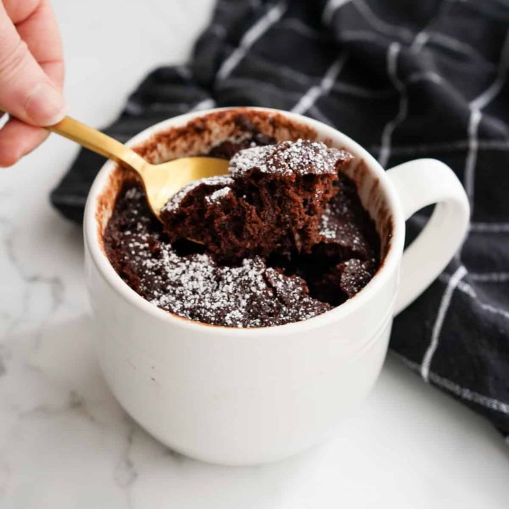

Appetizer — Fresh Garden Salad
View
- Lettuce
- Tomato
- Cucumber
- Dressing
- Wash your leafy greens and dry them completely using a salad spinner or by laying them on a clean towel.
- Slice, chop, or dice your additional vegetables.
- In a small jar or bowl, whisk together the olive oil, lemon juice/vinegar, salt, pepper, and optional honey until combined.
- Place the dried, torn, or chopped lettuce into a large bowl.
- Just before serving, pour the dressing over the salad and toss gently to coat everything lightly.
- Top with cheeses, nuts, or croutons for extra crunch and flavor.
Main Course — Garlic Butter Chicken
View
- Chicken breast
- Garlic
- Butter
- Salt & pepper
- Pat 1.5 lbs of chicken breasts dry with paper towels to ensure a good sear.
- In a large skillet, melt 1 tbsp of butter with 1 tbsp of olive oil over medium-high heat.
- Remove the chicken from the skillet and set it aside on a plate.
- Reduce the heat to medium.
- Pour in 1/2 cup of chicken broth. Use a wooden spoon to scrape up all the browned bits.
- Let the sauce simmer for 2-3 minutes to reduce slightly.
- Return the chicken and any resting juices back to the skillet.
Dessert — Chocolate Mug Cake
View
- Flour
- Cocoa powder
- Sugar
- Milk
- In your mug, stir together the dry ingredients.
- Stir in the vegetable oil and milk until the mixture is smooth.
- Microwave on high for one minute and then enjoy!.
Drink — Lemon Iced Tea

View
- Tea
- Lemon
- Sugar
- Ice
- Bring 4 cups of water to a rolling boil in a saucepan or kettle.
- Remove the water from the heat.
- Remove the tea bags or strain the leaves.
- Pour the hot tea concentrate into your pitcher and add 4 cups of cold water.
- Let the tea sit until it reaches room temperature, then place it in the refrigerator until thoroughly chilled.
- Just before serving, stir in fresh lemon juice, lemon slices, and mint leaves.
- Fill glasses with ice cubes and pour the tea over them.